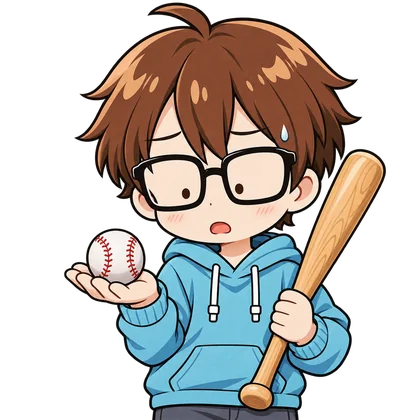

SNSで講座・教室・サポートを届ける方へ
SNSに「正解」はない。 あるのは どっちのタイプかだけ。
うまくいっている人のやり方を真似して、しっくりこなかったこと、ありませんか。
それ、努力が足りないんじゃなくて、タイプが違うだけかもしれません。
- 全10問
- 約1分
- 無料
- 登録なしで結果まで
動画で見る（約4分）
なぜ「合うやり方」は、
人によって違うのか。
音が出ます。字幕つきなので、音なしでも見られます。
こんなこと、ありませんか
同じことをやっているのに、
うまくいく人と、いかない人がいる。
- 毎日投稿がいいと聞いて、半年がんばった。フォロワーは増えた。でも売れない。
- 発信を減らして、会って話すようにしたら売れた。でも、会える人数に限界がある。
- 有名な人のやり方を真似してみたけれど、どうにも自分には合わない気がする。
これ、やり方が間違っているんじゃありません。
やり方と、その人のタイプが噛み合っていないだけです。
たとえば、野球なら
ホームランを打ちたいのに、
教わるのは、剛速球の投げ方。
ホームランを打ちたくて、
野球教室に入った。

なのに、教えてもらえるのは、剛速球の投げ方。
……いや、打ちたいんですけど。
……いや、打ちたいんですけど。
それでも結果が出ないと、次は別の先生を探しにいく。
こうやって、やり方だけが増えていきます。
野球って、勝ち方が
ひとつじゃないんです。
- ホームランで勝つ
- ヒットを重ねて勝つ
- 守備を固めて勝つ
- 完封して勝つ
どれも、ちゃんとした勝ち方です。
集客も同じで、戦い方はいくつもあります。
世界で一番売れている2人も、真逆です
「自分を売る人」と、
「オファーを売る人」。
人柄とストーリーで惹きつける。少人数と深くつながって、一対一で届ける。
中身と条件で選ばれる。たくさんの人に届けて、仕組みで自然に決まっていく。
どちらも正しい。けれど混ぜると、どちらも効かなくなります。
この診断でわかること
自分がどっち側の人なのか。
- どっち寄りなのかラポール型・シグナル型・両利き型の3つから。割合で出ます。
- もともと持っている武器自分では当たり前すぎて、気づいていないことが多いところです。
- ついやってしまう遠回り合わないやり方を、量でカバーしようとしていないか。
そのうえで何から手をつけるかは、結果のあとで、タイプ別に動画でお話しします。
結果のイメージ
Rapport Type
ラポール型
ラポールシグナル
62.5%37.5%
1分で終わります。
メールアドレスの入力は、結果を見たあとで大丈夫です。
登録しなくても、タイプと特徴まではその場で読めます。
ラポールシグナル
—%
—%
あなたは、こういう人です
でも、たぶんここでつまずいています